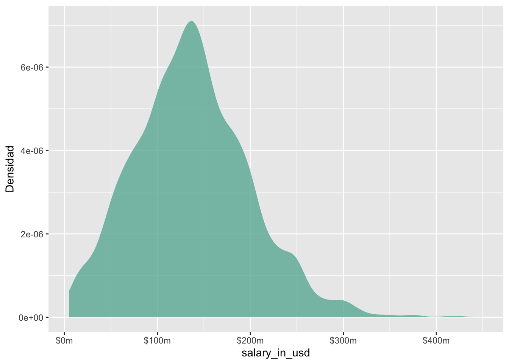
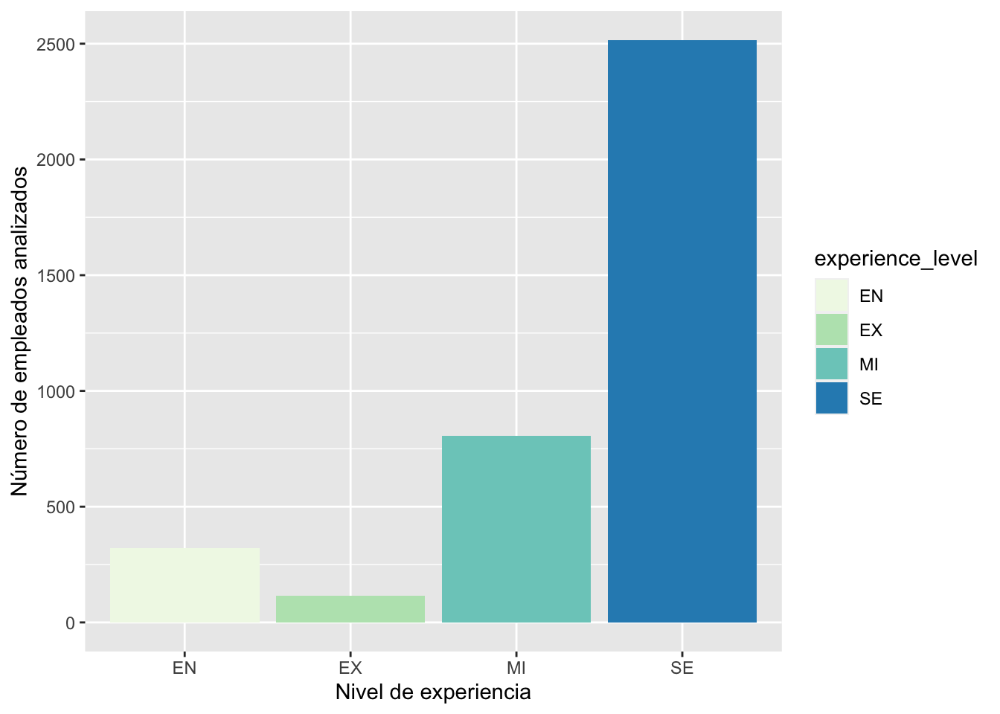
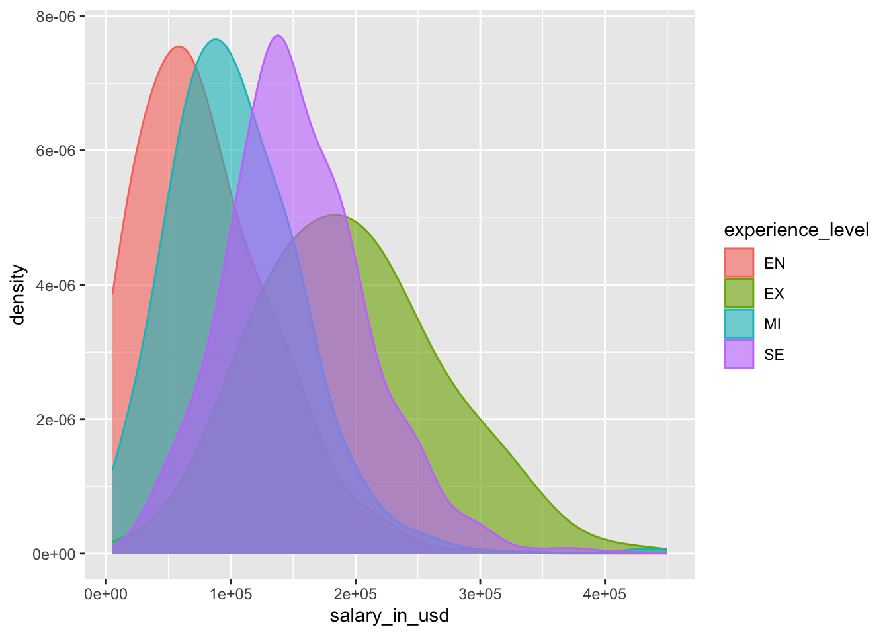

En este análisis, construimos un modelo que predice los salarios de los profesionales basados en factores asociados al profesional y a la empresa.
Paquetes
library(tidyverse) # Para la gestión y visualización de datos library(knitr) # Para tablaslibrary(broom) # Para el resumen del modelolibrary(readr) # Para lectura de datos separados por csvlibrary(ggplot2)library(hrbrthemes)library(scales)url <-'https://raw.githubusercontent.com/ousuga/Datos/main/ds_salaries.csv'salarios <-read_delim(url, delim =";", escape_double =FALSE, col_types =cols(work_year =col_character(), remote_ratio =col_character()), trim_ws =TRUE)
Vamos a presentar los resultados del análisis de datos exploratorio en Sección 2 y el modelo de regresión en Sección 3.
2 Análisis exploratorio de datos
Como parte del análisis de datos exploratorios vamos a visualizar la relación entre el salario y el nivel de experiencia de los profesionales.
2.1 Visualización de datos
Figura 1 muestra la densidad de la distribución del salary_in_usd y un diagrama de barras del experience_level de los profesionales.
Código
ggplot(salarios, aes(x = salary_in_usd)) +geom_density(fill="#69b3a2", color="#e9ecef", alpha=0.8) +labs(y ="Densidad") +scale_x_continuous(labels =label_number(scale =1e-3, prefix ="$", suffix ="m", accuracy =1)) ggplot(salarios, aes(x = experience_level, fill = experience_level)) +geom_bar() +scale_fill_brewer(palette="GnBu") +labs(x ="Nivel de experiencia", y ="Número de empleados analizados")

(a) Densidad de salary_in_usd

(b) Diagrama de barras de experience_level
Figura 1: Densidad y diagrama de barras de salario y nivel de experiencia
Figura 2 muestra la relación entre salarios y nivel de experiencia de profesionales.
Código
ggplot(salarios, aes(x=salary_in_usd, group=experience_level, fill=experience_level, col = experience_level)) +geom_density(adjust=1.5, alpha=.6) ylab("")
$y
[1] ""
attr(,"class")
[1] "labels"

Figura 2: Salario vs Nivel de experiencia
2.2 Summary statistics
Tabla 1 muestra resumen estadístico para estas dos variables.
Código
salarios %>%summarise(`Mediana de Salario`=median(salary_in_usd),`RIC salario`=IQR(salary_in_usd) ) %>%kable(digits =c(0, 0))
Tabla 1: Resumen estadístico de salarios vs Nivel de experiencia
Mediana de Salario
RIC salario
135000
80000
3 Modelación
Ajustamos un modelo de regresión lineal simple de la forma mostrada en la Ecuación 1.